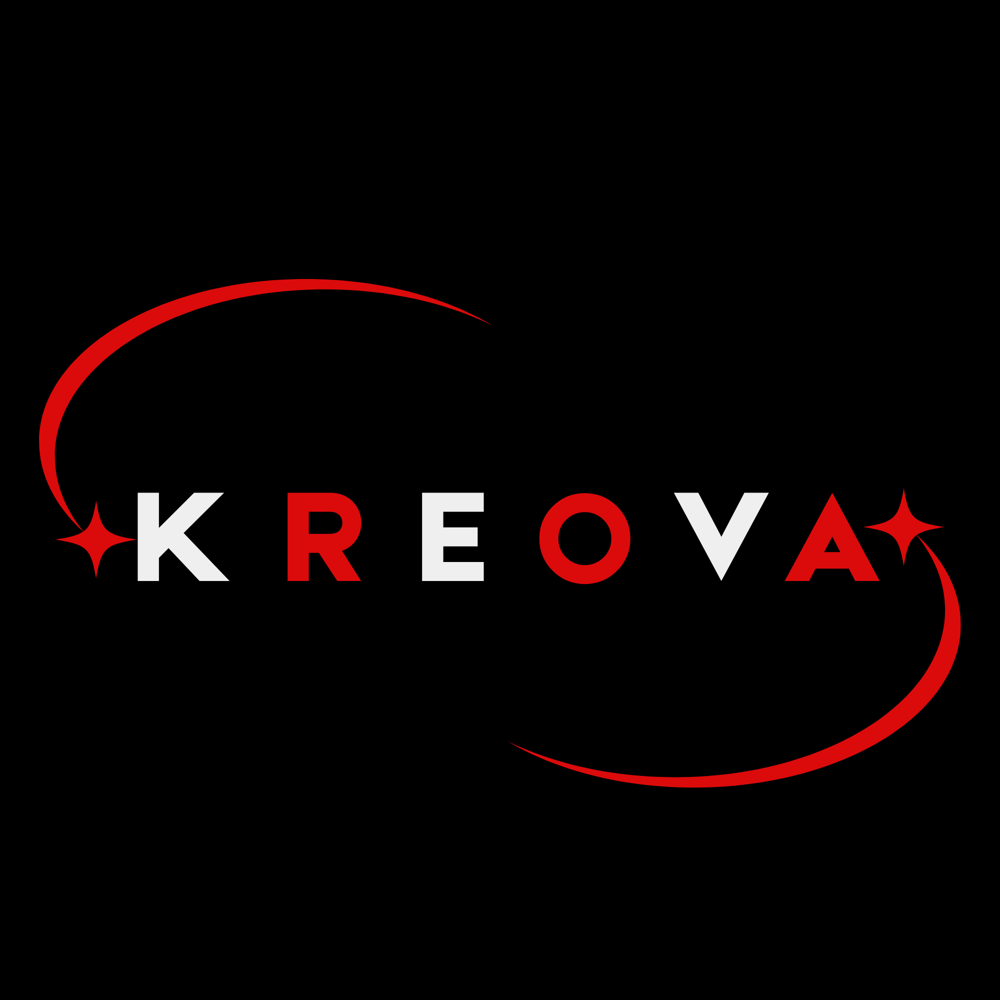

Need a website that converts for your business?
A website that is both responsive and practical
It's one thing to build a website,
but it's another to build a website that
helps your business achieve its goals

It's one thing to build a website,
but it's another to build a website that
helps your business achieve its goals
